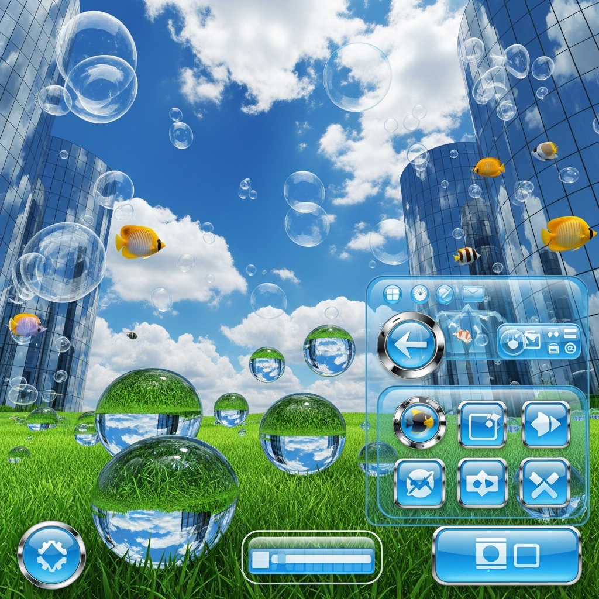
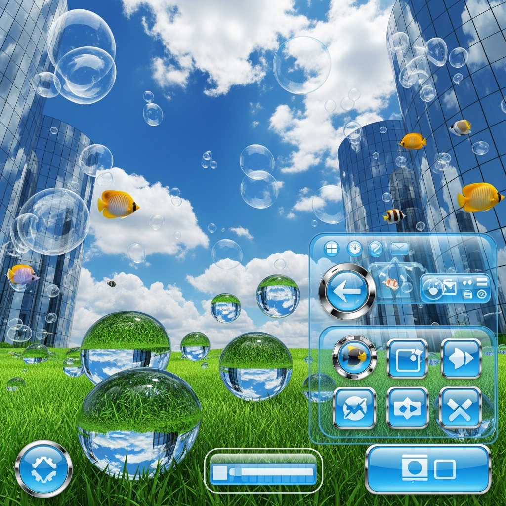
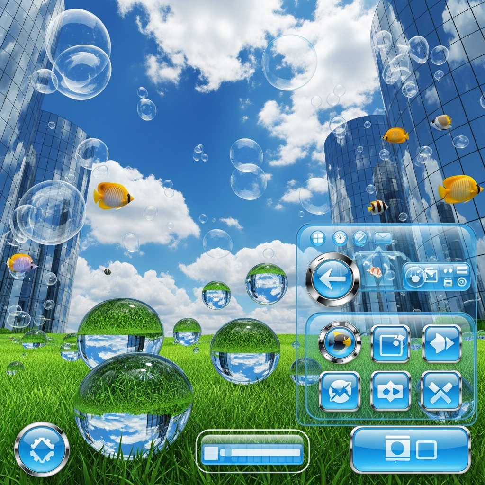

Prism Gallery
_
□
×
 


FRUTIGER AERO OS
Aero Mix 2026

El optimismo tecnológico del cambio de milenio (2004-2013)
Frutiger Aero es un término acuñado en internet (específicamente en la comunidad de Consumer Aesthetics Research Institute o CARI) para describir una estética omnipresente en el diseño corporativo, la publicidad y la tecnología aproximadamente entre 2004 y 2013.
El nombre combina dos elementos clave:
Frutiger Aero surgió como una evolución y refinamiento de la estética Y2K (finales de los 90s). Mientras que el Y2K era cromado, alienígena y a veces caótico, el Frutiger Aero buscaba ser más amigable, limpio y profesional.
El lanzamiento de Windows XP (2001) con su fondo "Bliss" (la colina verde) plantó la semilla, pero el estilo explotó realmente con la llegada de las pantallas de alta definición (HD). Las empresas necesitaban demostrar que sus nuevas pantallas podían mostrar colores vibrantes y texturas complejas que el diseño plano no permitía.
Los iconos y botones imitaban materiales del mundo real: vidrio, metal cepillado, cuero y plástico brillante. La idea era que si un botón digital parecía un botón físico, el usuario sabría instintivamente que podía "presionarlo".
A diferencia del Cyberpunk distópico, Frutiger Aero presentaba una simbiosis perfecta entre tecnología y naturaleza. Campos de hierba infinita, cielos azules sin nubes, gotas de rocío y peces tropicales nadando en pantallas.
El agua representa pureza y fluidez. Burbujas, salpicaduras y ondas eran omnipresentes para sugerir frescura y limpieza en el software.
Para los fondos abstractos, se usaban luces desenfocadas (bokeh) y ondas de energía suaves (auroras) que sugerían conectividad global y flujo de datos invisible pero inofensivo.
Hacia 2012, el Frutiger Aero comenzó a morir. La causa principal fue la saturación y la necesidad de eficiencia.
Con la llegada de Windows 8 y su interfaz "Metro" (bloques de colores sólidos) y posteriormente iOS 7 de Apple (que eliminó todas las texturas de cuero y vidrio), el mundo adoptó el Flat Design (Diseño Plano). Las interfaces necesitaban escalar a miles de tamaños de pantalla diferentes (móviles, relojes, tablets), y las texturas pesadas del Aero eran difíciles de renderizar y adaptar.
Desde 2022, Frutiger Aero ha vuelto con fuerza gracias a la Generación Z en TikTok y YouTube. ¿Por qué?
Representa una época en la que el futuro parecía optimista. Internet era un lugar divertido para explorar, no una obligación laboral. El diseño plano actual (Minimalismo Corporativo) se percibe a menudo como "frío", "estéril" y "deprimente". Frutiger Aero nos recuerda un tiempo donde la tecnología prometía salvarnos, no controlarnos.